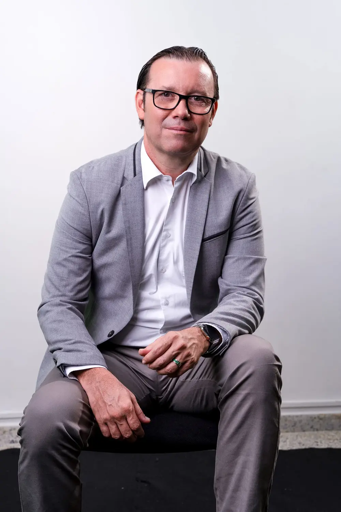

Sede de Bucaramanga ampliada
Más aulas y laboratorios para quienes ya estudian, y más oportunidades para quienes esperaban entrar.
Cómo se hizoApariencia

El conocimiento tiene que convertirse en obra.
Santandereano, ingeniero e investigador MinCiencias. Pasó casi doce años al frente de las UTS llevando la educación a más gente y a más municipios.
Logros UTS · 2015–2026
Sobre Lengerke
Nació en El Socorro, Santander. Estudió sistemas, hizo maestría en México y doctorado en Brasil, especializándose en robótica. Volvió a poner ese conocimiento al servicio de su tierra.
Investigación
Investigador Senior reconocido por MinCiencias. Desde 2007 ha estudiado cómo hacer mejores robots, máquinas y energías limpias: preguntas de laboratorio que terminan sirviendo en la industria, el campo y el hogar.
Reconocimientos
Doce distinciones de concejos, asambleas, gremios y medios, por su trayectoria y su impacto educativo.
2024
Categoría de instituciones públicas que hacen crecer a Santander.
Por su labor en Derecho Humanitario y paz.
La máxima distinción del Concejo Municipal.
Por su servicio a la sociedad y su trato con la prensa.
Súmate
Déjenos sus datos y el equipo de Omar Lengerke le escribe.